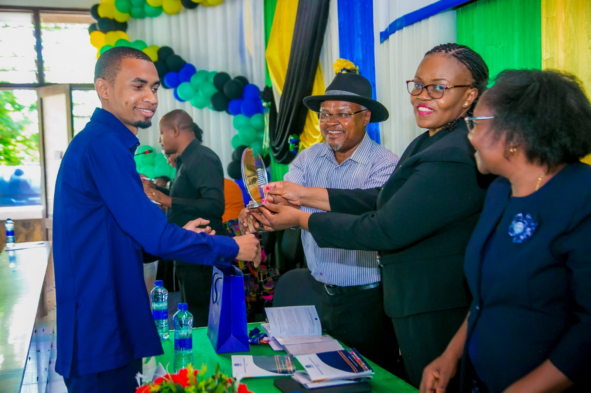
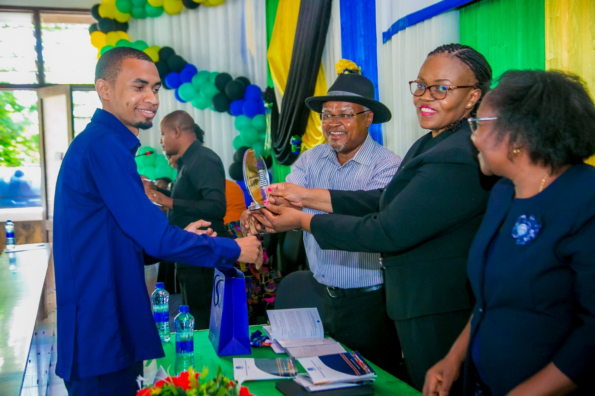

Short picture highlight.
"Imagine a day filled with anticipation and excitement, as graduates gather in their caps and gowns, ready to embark on a new chapter of their lives. The convocation ceremony is a momentous occasion, where the achievements and hard work of students are celebrated.
As the sun shines brightly, casting a warm glow on the campus, families and friends fill the seats, eagerly waiting to witness this milestone. The air is filled with a mix of emotions - pride, joy, and a hint of nostalgia. The atmosphere is electric, as the graduates take their places, their hearts pounding with a sense of accomplishment.
The ceremony begins with a procession, led by the faculty and distinguished guests, creating an aura of grandeur and reverence. The university president delivers an inspiring speech, acknowledging the dedication and perseverance of the graduates. Words of wisdom and encouragement fill the air, resonating with each individual in the audience.
One by one, the graduates are called to the stage, their names echoing through the crowd. As they walk across the stage, a wave of applause and cheers fills the hall, a testament to their hard work and determination. The moment they receive their diplomas, a sense of pride washes over them, knowing that they have reached this significant milestone.
Amidst the applause, the ceremony is also a time for reflection. Graduates reminisce about the friendships formed, the challenges overcome, and the lessons learned throughout their academic journey. It is a time to express gratitude to the professors, mentors, and loved ones who supported them along the way.
As the ceremony draws to a close, the graduates toss their caps into the air, a symbolic gesture of their newfound freedom and the beginning of a new chapter. They leave the convocation hall with a renewed sense of purpose, armed with knowledge and ready to make a positive impact on the world.
The convocation ceremony is a celebration of hard work, dedication, and the pursuit of knowledge. It is a day that
marks the end of one journey and the beginning of another, filled with endless possibilities and opportunities. It is a day to cherish and remember, forever etched in the hearts and minds of those who were fortunate enough to be a part of it."
Photos referring to activities in the convocation day!!
>Here are some Photos;


 



 Convocation Highlights.
Convocation Highlights.